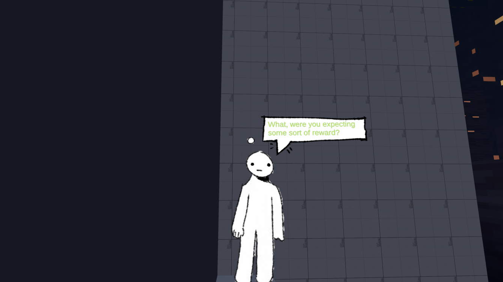
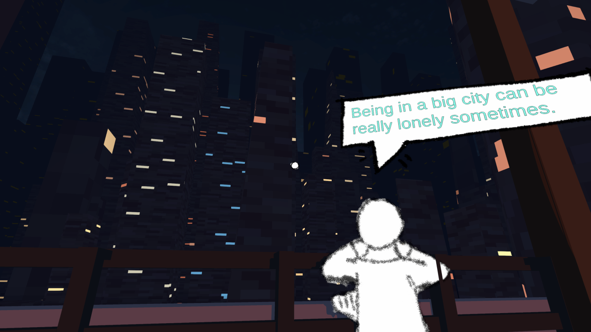

Mini Mecum
Listen to the music while reading this blog! The rest of the soundtrack is only available by purchase so I don't want to post it here. But it's damn good too.
If you go on the Steam page, you may notice that the entire game looks different. That's because the dev pushed out a huge graphical update after the game released. I personally thought the old chunky style was quite nice, I really like the new pencil sketch style.
I found this game by complete accident. I was a huge Persona 5 fan at the time (I still haven't played the game past the third dungeon, but I did watch a playthrough! I don't know why it happened). The dev made an android widget that mimicked the in-game clock, and in the widget's app, there was a link to join the discord. There, I saw a post about Mini Mecum. So I was intrigued. I tried it and fell in love with it. Let me tell you about Mini Mecum.
Mini Mecum is a walking sim which, IMO, is the best genre. It does everything that videogames need to. They are fun! So fun! In Mini Mecum, you explore 4 distinct areas, and one ending area. As is usual for most walking sims, the ending is not necessarily the most important part of your experience. Instead, the journey, the characters you've talked to and such, are at the forefront. This is also true in Mini Mecum. Every Mini Mecum character has something to say. Some are meaningful and insightful, some suck. You can even talk to yourself!
Overall, the game is pretty short. Although that doesn't make it bad or anything. It's ok for a game to be small, because I LOVED my time with Mini Mecum. If anything, the fact that I'm complaing it's too short just means I wanted more! Just in case this blog makes you want to play it, I don't want to spoil too much, such as how you get the ending, so I won't mention it, but I will say that the office and vacation areas were my favorite. In the vacation area, I mostly liked how many interactive elements there are. You have to bring a key item to a chest and open a bridge, and your reward is the jump key, which I think is really good. Your very first journey stays with you forever and I think that's beautiful. As for the office, well, it's where the entire game is, so I don't want to spoil it.
Mild spoiler warning for the content ahead. I won't talk about the ending or anything, but I will talk about some of the content.
The most unpleasant parts of Mini Mecum, for me, have been the controls. The space key. It is so laughably inconsistent. When you press the key, you are bound to jump like 40% of the time. In the office, there is a mandatory jump at the start, and it is genuinely so hard to do. It honestly ruined every playthrough of the game for me. For some reason, I recall not having this issue before? I'm not entirely sure if this is the dev's fault or mine. I will assume it is mine because I want to think this game is perfect.
Gameplay-wise, I really liked this game. The cycle of exploring areas and finding new people to talk to with different sights never stopped being entertaining. Until I ran out of them, of course. Such is the fate of any game. My biggest gripe is that there isn't as many items as I'd like. You find literally all of them (the paintbrush, the key, and the beach ball) in your first few minutes of gaming.
This game has two bullshit achievements. The first one is only awarded to you if you are the dev. The second is only awarded if you type in the entirety of Hamlet.
BIG SPOILER. OFFICE.
The big area. I've experienced tons of bugs there. Not that they detract from the games; I actively loved hunting them. They've been the reason I have so many hours in the game. The original version of the Office had a Girls' Last Tour reference which I only caught posthumously. The most annoying bug has been the one that makes the elevator, your means of travel, disappear. ugh for that one
Bit of an aside, but when I replayed the game for this bug, I loaded into the zeppelin level, quit the game, and took a break. When I came back I was completely stuck. Thankfully the dev responded immediately (literally within the minute) when I asked for help on the discord. She was extremely helpful and fixed my game <3. If you ever get stuck in an area after quitting, open your registry editor (yes, Unity saves in the registry editor. For some reason?). And navigate to Computer\HKEY_CURRENT_USER\Software\Fruit Basket Games\Mini Mecum, and delete level_hwhatever. You will be reset back to the museum.
I originally had a big reading of the game's themes here, but I couldn't make myself pleased by it. I just think getting to look at someone else's thoughts is something really special. I will say that a few things have struck me as very specific choices. Did you know that Mini Mecum means "come with me" in Latin? The fact that the office level is by far the largest level, and the most convoluted one. I really doubt that was an accident. Something about your majority of life being work. Although, that just makes the time spent not working more special, doesn't it?
I love this game, and you should too.
GO PLAY IT. NOW. YOU WON'T REGRET IT.

